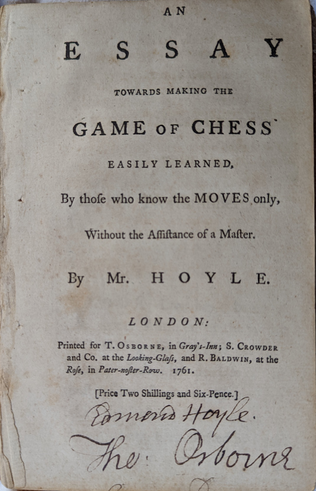

A Descriptive Bibliography of Edmond Hoyle
Copyright © 2014-26 by David Levy
(page updated 2026-01-30)User Guide
Chess.1
An Essay on Chess, printed for T. Osborne et al, first London edition, 1761.
 |
Title: | AN | ESSAY | TOWARDS MAKING THE | GAME OF CHESS | EASILY LEARNED, | By thoſe who know the MOVES only, | Without the Aſſiſtance of a Maſter. | By Mr. HOYLE. | LONDON: | Printed for T. Osborne, in Gray's-Inn; S. Crowder | and Co. at the Looking-Glaſs, and R. Baldwin, at the | Roſe, in Pater-noſter-Row. 1761. | {Price Two Shillings and Six-Pence.} |
| Collation: | 8o: A–H4 [$½ signed]; 32 leaves, pp. [8 ] 1–54 [2 ] |
| Contents: | Signature (Page) Reference | Contents | Signature (Page) Reference | Running Titles |
| A1r | [title] | [autographs of Edmond Hoyle and Thomas Osborne] | |||
| A1v | blank | |||
| A2r–A2v | ‘TO THE | RIGHT HONOURABLE | THE | Earl of Northumberland. | [...]’ | A2v | ‘DEDICATION.’ | |
| A3r–A4v | ‘PREFACE. | [...]’ | A3v–A4v | ‘PREFACE.’ | |
| B1r–H3v (1–54) | ‘[headpiece Ross 31] | HOYLE's | Chess Lectures. | [...]’ | |||
| H4r | blank | |||
| H4v | advertisement for Chances.1.2 |
| Catchwords: | A4v HOYLE's [HOYLE's]; F3v(38) The [The] |
| Press Figures: | C4v(o):2; D4r(i):2; E4r(i):5; F4r(i):1 |
| Publisher: | Thomas Osborne, Stanley Crowder, Richard Baldwin |
| Printer: | Henry Baldwin (ornaments) |
| Notices: | 1760-12-24 Public Advertiser: "Tuesday next will be published, dedicated to the Right Hon. the Earl of
Northumberland, price 2s. 6d. sewed in marble paper, An Essay Towards Making
the Game of Chess easily learned, by those who know the moves only, without
he t [sic] Assistance of a Master. By Mr. Hoyle." 1769-12-26 Gazetteer and New Daily Advertiser: "Mr Hoyle's Essay on the Game of Chess, price 2s." |
| Price: | 2s.6d. (title, advertisement), 2s. (advertisement) |
| References: | ESTC N1784, Marshall s7 no.9 p143 (1890-02-22), Rather 44 |
| Copies Seen: | L [RB.23.a.5740]; O [G.Pamph.1862(11)] (Google); O [Jessel e.647(2)]; OCl [W789.093.H852]; PPL [Iu Lamb Allen 408 no.2]; Levy [1789]; Levy [2183] |
| Other Copies: | BFq [w DA943 FOST(44)]; BNF [VZ- 2587]; HAG [KW 364 C 27] (Google); Pa [8-S-16643]; CoCCC [GV1444.H69 1764]; MH-H [SG 3652.161*] (ECCO); NjP [42845.479.6]; PBL [794.1 H578LA]; PPAmP [PMP v.57, no.3] |
| Notes: | It is unclear whether Crowder was a copyright holder or a trade publisher. See the discussion in the essay "The Hoyle Copyright in Hoyle's Lifetime (revisited)".The single woodblock ornament in the book once belonged to Charles Ackers who died in 1759. Henry Baldwin carried on Ackers' business and printed a number of books for his cousin Richard. See C. Y. Ferdinand, “Richard Baldwin Junior, Bookseller” in Studies in Bibliography, 42:254-264 (1989). On that basis, I tentatively identify Henry Baldwin as the printer here. |